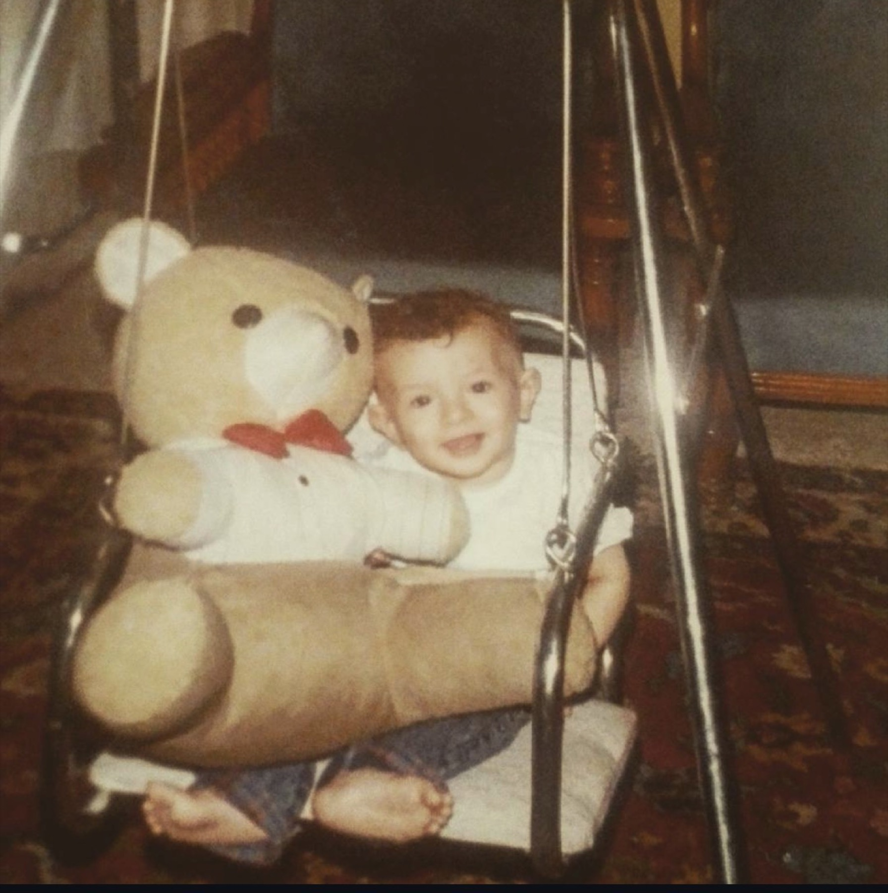

Sketches · not live · nothing wired up
Same two inks throughout: red for the display, deep green for the line-work, on note stock. The engraving is real vector line-work, not a texture or a filter, so it stays sharp and none of it is a download.
The face is the childhood photo standing in, so you can see what "engraved portrait" actually looks like as a technique. Send a headshot and it swaps.
Closest to your reference. Ornate engraved frame all the way round, guilloché rosettes in the corners, portrait medallion, denomination, twin serial numbers, signature rules. It is unmistakably money. Risk: the ornament does the talking, so the copy has to fight it for attention.
Heaviest build · most decorativeMohammed Essam
copywriter
Instant win · Game no. 13 · Price: free
0awards so far

your face hereI write in English and Arabic. I order coffee in Spanish and French.
The Severance one. Not a banknote, an internal document issued by an institution that takes itself entirely seriously. Green header bar, clinical grid, numbered clauses along the bottom, one framed portrait, almost no ornament. The joke lands harder because nothing on the page is winking. Risk: cold, and the least like the reference you sent.
Lightest build · most currentMohammed Essam
copywriter
I write in English and Arabic. I order coffee in Spanish and French.
The middle. Banknote engineering without the fancy dress: a guilloché band across the top, one rosette behind the portrait, perforated coupons along the bottom, and the headline set as big as it is now. Reads as an official object, not as a costume. This is the one I would build.
Medium build · keeps the headline dominantMohammed Essam
copywriter
If I play, I play to win
No. 0000000I write in English and Arabic. I order coffee in Spanish and French.
Your reference tickets are wide and short, like money. The home page currently fills 95% of the screen, which is much squarer. Below is C at true banknote proportion. Filling the screen makes it feel like a poster; keeping it note-shaped makes it feel like an object you were handed.
Mohammed Essam
copywriter
If I play, I play to win
No. 0000000I write in English and Arabic. I order coffee in Spanish and French.